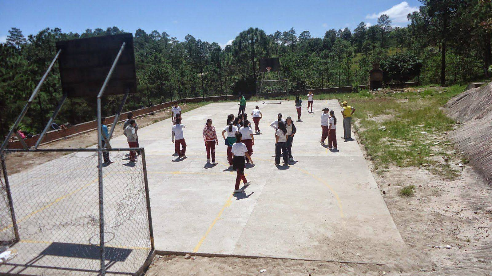
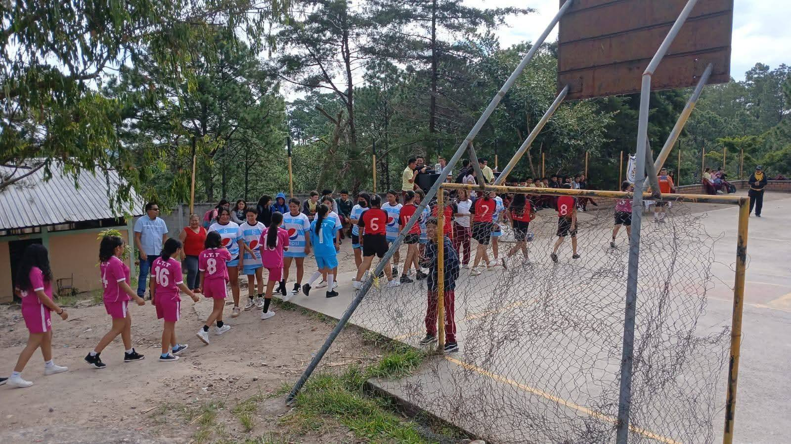

Agosto 2026
Modernización del Laboratorio de Informática
Se equipó la sala técnica con nuevas computadoras y conexión de alta velocidad para los estudiantes de BTP.
Leer más en el Blog →Bienvenidos a la plataforma digital del Instituto Gubernamental Técnico Francisco Miranda. Educamos con integridad, ciencia y habilidades prácticas para el trabajo.
Recuerda que ya puedes seleccionar la carrera y jornada de tu preferencia (Matutina o Vespertina). Revisa los requisitos de inscripción en línea.
Ir a RegistroUna trayectoria construida con el esfuerzo de generaciones enteras de estudiantes, docentes y familias de nuestra comunidad.
El Instituto Gubernamental Técnico Francisco Miranda ha sido, a lo largo de los años, un pilar fundamental en la formación de la juventud de la Aldea Zambrano y sus comunidades aledañas. Desde sus aulas han salido generaciones de estudiantes que hoy aportan su conocimiento y su esfuerzo al desarrollo de sus familias y de todo el municipio.
Más que una institución educativa, el instituto representa un punto de encuentro para la comunidad. Su compromiso ha sido siempre ofrecer una formación académica y técnica de calidad, acompañada de valores humanos: el respeto, la disciplina, la solidaridad y el amor por el trabajo bien hecho.
Detrás de cada logro hay docentes comprometidos, padres de familia que confían y estudiantes que sueñan en grande. Las actividades culturales, musicales y deportivas —como la Banda Latina FM y los equipos deportivos del instituto— forman parte esencial de esa identidad, enseñando trabajo en equipo y orgullo institucional dentro y fuera del aula.
Mirando hacia el futuro, el I.G.T. Francisco Miranda reafirma su misión: seguir formando nuevas generaciones de técnicos y profesionales íntegros, capaces de transformar su entorno y honrar el legado de quienes pasaron antes por estas aulas.

Fútbol masculino y femenino, baloncesto, voleibol, atletismo, ajedrez y tenis de mesa forman parte de la vida deportiva del I.G.T. Francisco Miranda. Conoce nuestra historia, logros y a las personas detrás de cada equipo.
Ver sección de DeportesSe equipó la sala técnica con nuevas computadoras y conexión de alta velocidad para los estudiantes de BTP.
Leer más en el Blog →Alumnos de Agroindustria presentaron productos procesados localmente en la comunidad de Zambrano.
Leer más en el Blog →Se socializaron los avances académicos del ciclo y las normativas de uniforme e infraestructura.
Leer más en el Blog →Mantente al día con los videos de la Banda Latina FM, fotos de talleres y anuncios institucionales. ¡Déjanos tus opiniones y sugerencias en nuestra sección de comentarios!
"Nuestra misión es brindar una formación técnica de calidad que abra puertas profesionales reales a la juventud de Zambrano y sectores aledaños."
Juan Carlos Herrera Espinoza — Director, I.G.T. Francisco Miranda
Visítanos en nuestras instalaciones físicas para realizar trámites presenciales o solicitar información sobre la oferta académica.

Aldea Zambrano, Municipio del Distrito Central, Francisco Morazán, Honduras.